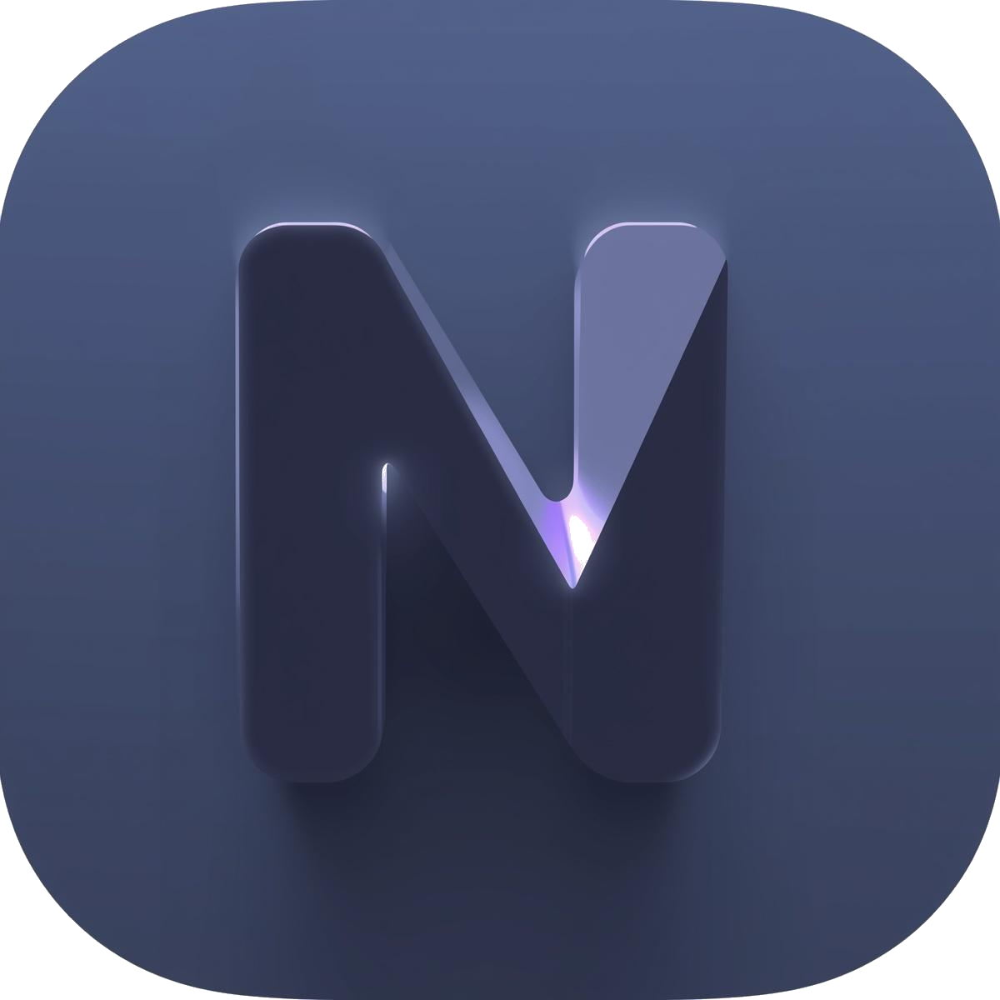
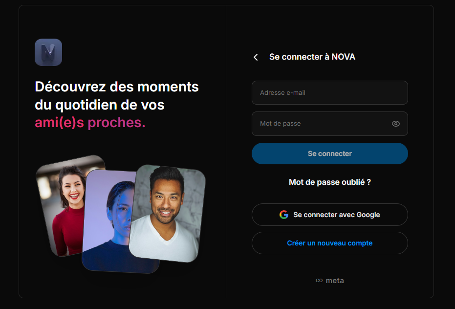
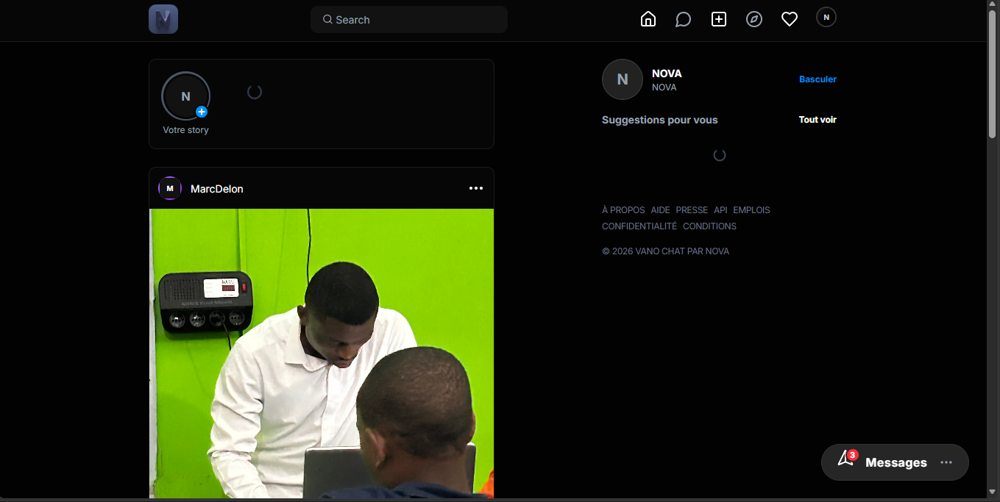
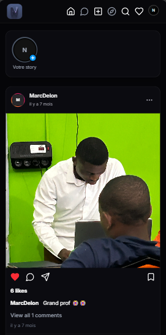
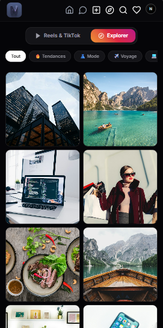
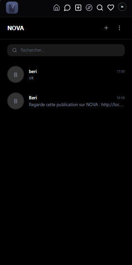
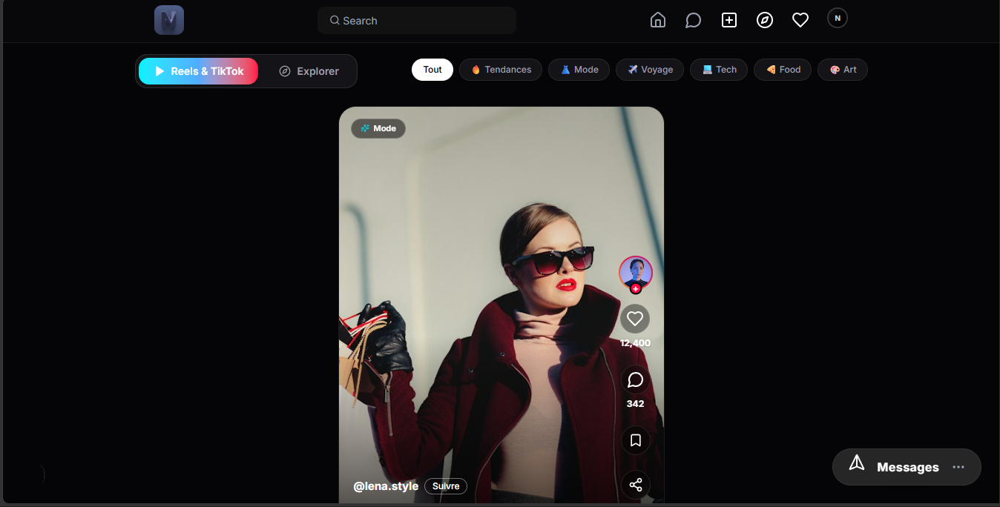
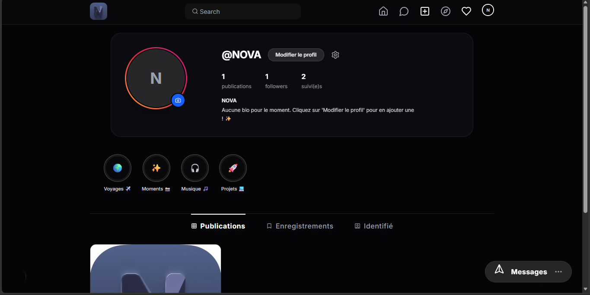
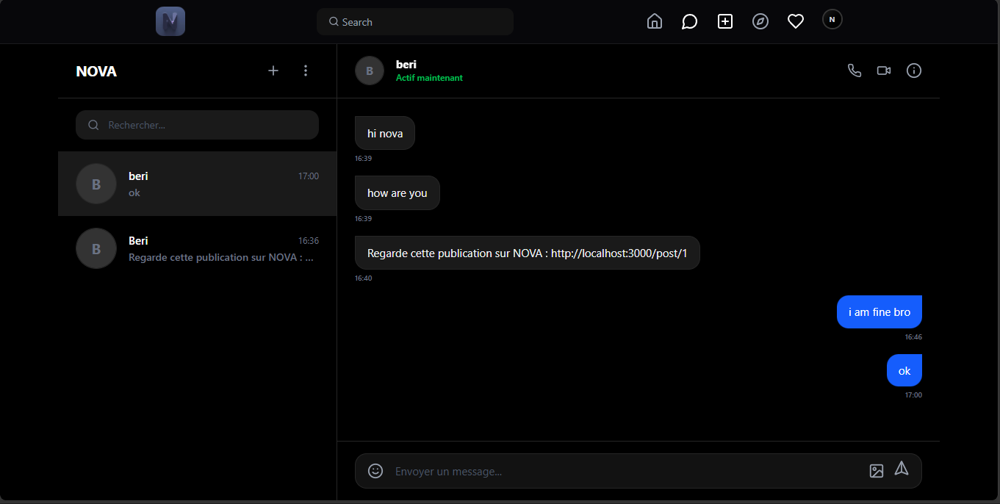

Le porteur du projet VANO-CHAT a exprimé les besoins suivants :
Pitch d’ascenseur de la solution :
Pour les jeunes et les étudiants qui veulent partager leur quotidien avec leurs ami(e)s proches, VANO-CHAT réunit dans une seule application le fil d’actualité, les stories, les vidéos courtes et la messagerie privée, avec une interface légère et rapide, même sur une connexion mobile modeste.
VANO-CHAT est développé par l’équipe NOVA dans le cadre du module API REST. Le projet dispose déjà d’une première version fonctionnelle :
Le marché des réseaux sociaux est dominé par de très grandes plateformes. Pour exister, VANO-CHAT doit se distinguer par la proximité (un cercle d’ami(e)s proches plutôt qu’une audience de masse), la légèreté de l’application et une expérience en français pensée pour son public.
L’objectif du projet est de livrer une application stable, en ligne et prête à accueillir ses premiers utilisateurs, avec un objectif de 1 000 membres actifs dans les trois mois suivant la mise en ligne.
| Membre | Rôle | Responsabilités |
|---|---|---|
| Zilda | Développement backend | Cœur du serveur, base de données, authentification et sécurité |
| Kom | Développement backend | Fil d’actualité et publications |
| Marco | Développement et gestion de projet | Stories, partage, messagerie, interactions sociales, coordination |
| Nassrine | Développement frontend | Interface, design system, expérience utilisateur |
Pour atteindre cet objectif, l’agence Nova DEV livrera les éléments suivants :
| Livrable | Date |
|---|---|
| Cahier des charges fonctionnel et technique | 17 novembre 2026 |
| Charte graphique | 1 décembre 2026 |
| Charte éditoriale | 1 décembre 2026 |
| Maquettes de l’application | 17 décembre 2026 |
| Application en ligne | 24 mai 2027 |
| + Formation à l’administration et à la modération | 31 mai 2027 |
La durée totale de 6,4 mois découle de l’estimation COCOMO (voir section 7.1), répartie selon les proportions du modèle pour un projet organique.
| Période | Phase COCOMO | Étapes |
|---|---|---|
| 10 nov. – 17 déc. 2026 | Conception (19 %) | Cahier des charges, charte graphique et éditoriale, maquettes, organisation de la base de données |
| 18 déc. 2026 – 19 avr. 2027 | Programmation (63 %) | Développement du serveur et de l’interface, connexion Google, traduction |
| 20 avr. – 24 mai 2027 | Intégration et tests (18 %) | Tests complets, corrections, mise en ligne |
| 25 – 31 mai 2027 | Mise en service | Formation et passage en maintenance |
Positionnement retenu : réunir le meilleur de ces services (fil et stories, vidéos courtes, messagerie) dans une seule application légère, centrée sur le cercle d’ami(e)s proches.
| Caractéristiques socio-démographiques | Caractéristiques comportementales |
|---|---|
|
|
N.B. La majorité des visites se fera depuis un téléphone : la version mobile est prioritaire.
L’application est rédigée en français. Une version en anglais sera proposée afin de toucher le public anglophone (notamment au Cameroun, pays bilingue).
Les pages publiques (accueil, connexion, profils publics) respectent les bonnes pratiques SEO du référentiel OPQUAST : titres et descriptions uniques, temps de chargement réduit, images optimisées, partage enrichi sur les autres réseaux.
Le graphisme de VANO-CHAT doit être moderne, sombre et lumineux à la fois : un mode sombre profond qui met en valeur les photos et les vidéos, rehaussé de dégradés vifs empruntés aux codes des stories et des vidéos courtes. Les panneaux utilisent un effet de verre dépoli (glassmorphism) pour garder une impression de légèreté.
Logo :
Palette de couleurs :
Typographie : Inter (titres et contenus)
Design graphique : mode sombre, glassmorphism, coins arrondis
Les images sont fournies par les membres eux-mêmes (photos de profil, publications, stories). Elles seront compressées et redimensionnées automatiquement afin de ne pas alourdir le chargement des pages ni consommer trop de données mobiles. Les illustrations de la page d’accueil proviennent de banques d’images libres de droits.
| Fonctionnalité | Contrainte(s) associée(s) |
|---|---|
| Inscription et connexion | Email et mot de passe, ou compte Google en un clic |
| Fil d’actualité | Publications des comptes suivis, chargement progressif |
| Publications | Photo et légende ; suppression réservée à l’auteur |
| J’aime, commentaires, enregistrements | Compteurs mis à jour instantanément |
| Stories | Visibles 24 h, liste des vues |
| Explorer et Reels | Vidéos courtes en plein écran, filtres par catégorie |
| Profils | Grille des publications, abonnés, abonnements, publications enregistrées et identifiées |
| Abonnements | Suivre / ne plus suivre, suggestions de comptes |
| Recherche | Recherche de membres par pseudo |
| Messagerie privée | Conversations, modification et suppression de ses messages, compteur de non-lus, partage d’une publication |
| Notifications | J’aime, commentaires, nouveaux abonnés ; compteur de non-lues |
| Changement de langue | Français / anglais, toujours accessible |
| Fonctionnalité | Contrainte(s) associée(s) |
|---|---|
| Gestion des membres | Restrictions en fonction des rôles (administrateur, modérateur) |
| Modération des contenus | Suppression des publications et commentaires signalés |
| Statistiques | Nombre de membres, de publications et de messages en temps réel |








| Besoins | Contraintes | Solution |
|---|---|---|
| Application sociale riche : fil, stories, vidéos, messagerie, notifications | Rapidité, fonctionnement sur mobile, données des membres protégées | Développement sur mesure : interface Next.js, API REST Node.js / Express, base PostgreSQL (Supabase), plutôt qu’un CMS dont les extensions sociales sont limitées. |
En fonction des critères présentés dans la grille suivante, il convient d’utiliser la solution Next.js + Express + Supabase :
| Performance et temps réel (0,4) | Liberté de conception (0,3) | Expertise interne (0,3) | Score total sur 1 | |
|---|---|---|---|---|
| Next.js + Express + Supabase | 0,9 | 0,9 | 1 | 0,93 |
| Firebase | 0,8 | 0,6 | 0,4 | 0,62 |
| WordPress + BuddyPress | 0,4 | 0,3 | 0,2 | 0,31 |
Afin de proposer toutes les fonctionnalités identifiées, l’application utilisera :
Le nom de domaine (par exemple www.vanochat.com, sous réserve de disponibilité) sera réservé par l’agence. L’interface sera hébergée sur Vercel, l’API sur Render et la base de données sur Supabase. Le renouvellement sera assuré par l’agence.
Nous créerons 5 adresses email pour l’équipe en suivant le format suivant : prénom@vanochat.com, ainsi qu’une adresse contact@vanochat.com pour le support.
L’application sera compatible avec les navigateurs suivants :
L’application sera conçue de manière dite « responsive » pour assurer une navigation optimale sur tous les types d’appareils :
Connexion : Google Identity Services
Base de données et stockage des médias : Supabase
Suivi de l’audience : Vercel Analytics
L’accès aux comptes d’administration sera limité aux 4 membres de l’équipe NOVA. Une sauvegarde quotidienne de la base de données est prévue et assurée par l’agence.
La maintenance de l’application sera assurée par l’agence conformément au contrat annuel de maintenance et d’assistance.
Le coût du développement est estimé avec le modèle COCOMO intermédiaire (Boehm), en mode organique : petite équipe, technologies connues, exigences souples.
| Partie | Contenu | Lignes de code |
|---|---|---|
| Interface (Next.js) | Pages, composants, contexte d’authentification | 5 040 |
| Serveur (Node.js / Express) | Routes, contrôleurs, middleware, configuration | |
| Taille retenue | 5,04 KLOC | |
Lignes comptées dans le code source du projet, hors lignes vides, commentaires et bibliothèques de composants prêtes à l’emploi.
| Facteur | Signification | Niveau | Valeur |
|---|---|---|---|
| CPLX | Complexité du produit (authentification, messagerie, stories) | Élevé | 1,15 |
| VIRT | Stabilité de la plateforme (Node.js, Next.js) | Bas | 0,87 |
| TURN | Délai de réponse de l’environnement de développement | Bas | 0,87 |
| LEXP | Expérience du langage (JavaScript / TypeScript) | Élevé | 0,95 |
| MODP | Pratiques de programmation modernes (MVC, Git) | Élevé | 0,91 |
| TOOL | Outils logiciels (VS Code, Postman, GitHub) | Élevé | 0,91 |
| Les 9 autres facteurs (RELY, DATA, TIME, STOR, ACAP, AEXP, PCAP, VEXP, SCED) | Nominal | 1,00 | |
| Facteur d’ajustement EAF = 1,15 × 0,87 × 0,87 × 0,95 × 0,91 × 0,91 | 0,685 | ||
| Mesure | Formule (mode organique) | Résultat |
|---|---|---|
| Effort | E = 3,2 × KLOC1,05 × EAF = 3,2 × 5,465 × 0,685 | 11,97 personnes-mois |
| Durée | D = 2,5 × E0,38 = 2,5 × 11,970,38 | 6,4 mois |
| Équipe moyenne | N = E ÷ D = 11,97 ÷ 6,42 | 1,9 ≈ 2 personnes |
À titre de comparaison, le COCOMO de base (E = 2,4 × KLOC1,05) donne 13,11 personnes-mois et 6,7 mois. Les facteurs de coût réduisent l’effort de 9 % grâce à une équipe outillée et à l’aise avec ses langages.
Un mois-personne COCOMO compte 152 heures. Au taux horaire de 3 000 FCFA, il coûte 152 × 3 000 = 456 000 FCFA.
| Phase | Part de l’effort | Effort (personnes-mois) | Coût |
|---|---|---|---|
| Conception générale | 16 % | 1,92 | 875 000 FCFA |
| Conception détaillée | 26 % | 3,11 | 1 420 000 FCFA |
| Codage et tests unitaires | 42 % | 5,03 | 2 290 000 FCFA |
| Intégration et tests | 16 % | 1,92 | 875 000 FCFA |
| Total développement | 100 % | 11,97 | 5 460 000 FCFA |
11,97 × 456 000 = 5 458 320 FCFA, arrondi à 5 460 000 FCFA.
Le développement (estimé par COCOMO) inclut la conception, les maquettes, le serveur, l’interface et la connexion Google. Les prestations hors logiciel s’y ajoutent.
| Quantité | Description | Réduction | Coût |
|---|---|---|---|
| 1 | Développement de l’application VANO-CHAT (interface, serveur, base de données, connexion Google), selon l’estimation COCOMO : 11,97 personnes-mois | - | 5 460 000 FCFA |
| 1 | Internationalisation en anglais | - | 300 000 FCFA |
| 1 | Mise en ligne (Vercel, Render, Supabase) et nom de domaine | - | 150 000 FCFA |
| 1 | Référencement | - | 150 000 FCFA |
| 1 | Formation à l’administration et à la modération | - | 100 000 FCFA |
| 1 | Contrat de maintenance et d’assistance (abonnement annuel) | - | 400 000 FCFA |
| 1 | Création d’emails dédiés | 100% | 60 000 FCFA |
Montants hors taxes. Devis valable 30 jours à compter du 10 novembre 2026.